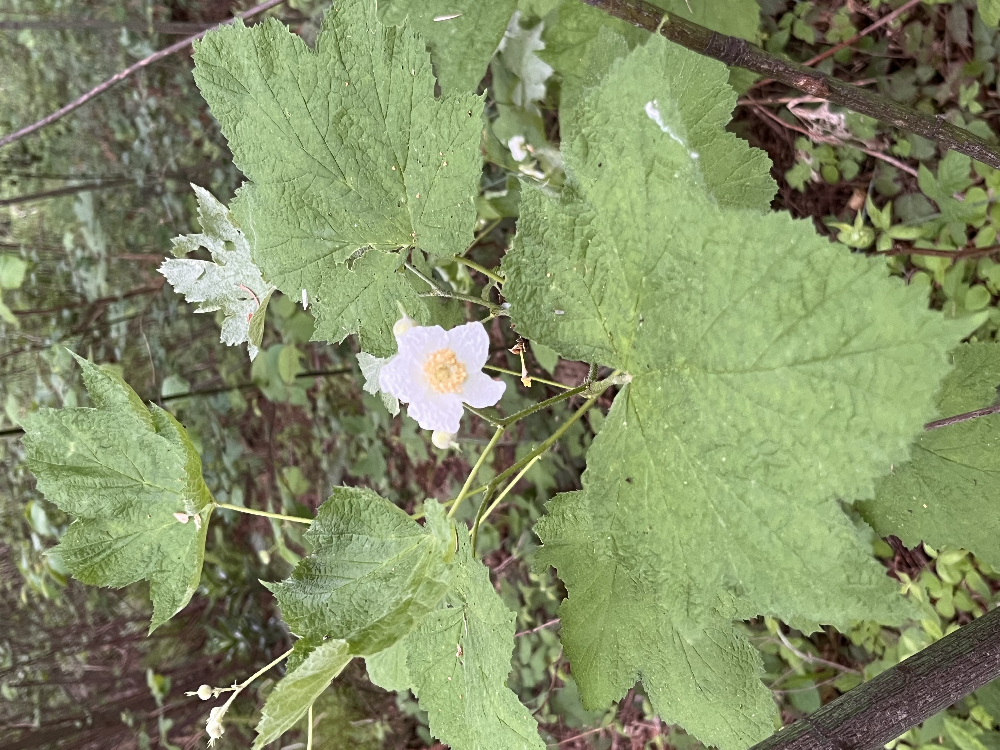

Since the last two posts were about blackberries, I figured we could stay on the same topic and see what other berries are growing in our greenspace this spring. In addition to the California and Himalayan blackberries, there are many other varieties of berry-bearing brambles that grow in the Pacific Northwest forests. Many of them look very similar to blackberries, with clusters of smaller jagged leaves and thorny vines and little white or pink flowers. But not all berries grow on vines, some grow on shrubs, and some, like the one we saw on our walk today, have large lobed leaves like a maple: the great Thimbleberry!

Thimbleberry
The plant in this image is a Rubus parviflorus, commonly called Thimbleberry, also known as Western thimbleberry, or Mountain sorrel. It is in the rose family (Rosaceae) and is native to western North America, including the Pacific Northwest.
You can tell this is a Thimbleberry because of these features:
- Large, soft, maple‑like leaves with 5 shallow lobes and a slightly wrinkled surface
- Leaves and stems lack the prickles or thorns typical of most Rubus (berry) species
- Delicate, five‑petaled white flower with a golden-yellow cluster of stamens in the center
- Upright, cane‑like stems growing in a shady, moist forest understory typical of the Willamette Valley
Similar plants
The Thimbleberry could sometimes be confused with Salmonberry which also has white (or pink) flowers and grows as a cane-forming shrub in moist Pacific Northwest woods. It also has edible raspberry-like fruits. However, Salmonberry is covered in noticeable prickles, usually has smaller and more triangular leaves divided into three main sections, and its flowers are often a deeper pink to magenta rather than pure white.
Brief History
The genus name Rubus comes from the Latin word for “bramble” or “blackberry,” referring to the many shrubby, often thorny berry species in this group.
Rubus parviflorus is native to western North America from Alaska down through California and east into the Rocky Mountains, where it has long been an important wild fruit for Indigenous peoples. The English common name “thimbleberry” comes from the hollow, thimble‑shaped berries that detach easily from the core, resembling a sewing thimble. Historically, the plant has been used both as a food and medicine, and its soft leaves were used practically as makeshift “toilet paper” or food wrappers. Symbolically, Thimbleberry is sometimes associated with abundance and the sweetness of summer in regional folklore because of its prolific fruiting in undisturbed forest edges.
Fun Facts
- Indigenous groups such as the Coast Salish, Tlingit, and others ate the berries fresh, dried them into cakes, and sometimes mixed them with other fruits like salal to store for winter.
- The broad, velvety leaves were used as natural food wrappers, improvised plates, and even as a soft substitute for toilet paper by campers and hikers.
- In some local traditions, carrying or planting thimbleberry near a home was thought to invite good harvests and protection for travelers, tying the plant to ideas of safe journeys and continued bounty.
Usage / Toxicity
Thimbleberry is not considered toxic. The bright red berries are edible, though very soft and seedy, and are best eaten fresh off the plant or made into jams and jellies where their tart flavor shines. Young shoots have reportedly been eaten peeled and raw or lightly cooked in some Indigenous cuisines. Medicinally, different Indigenous peoples have used leaf or bark infusions for a variety of ailments, including gastrointestinal upsets and to aid childbirth, though such uses should be approached cautiously and with proper ethnobotanical guidance. The shrub is also valuable for habitat restoration, stabilizing slopes, and providing food and cover for birds, bears, and other wildlife.
Invasiveness / Conservation Status
Thimbleberry is not invasive; it is a native forest shrub in the Pacific Northwest and much of western North America. It can spread vigorously by rhizomes and form dense thickets, but this is generally ecologically beneficial, providing erosion control and wildlife habitat. In gardens or restoration sites, you can manage its spread by thinning canes and installing root barriers if needed. Conservation-wise, it is not considered threatened, but preserving moist forest edges, riparian corridors, and limiting large-scale clearing helps maintain healthy thimbleberry populations and the native ecosystems they support.